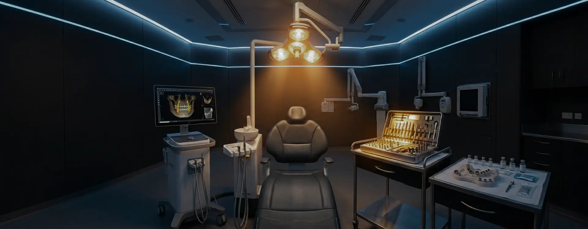
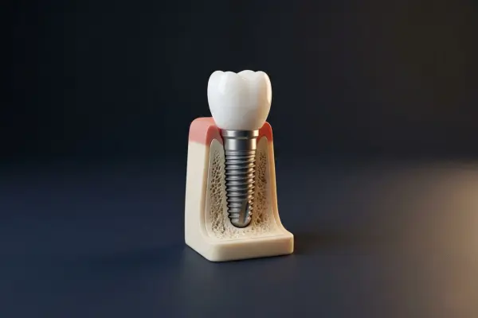
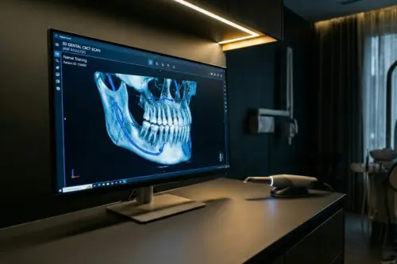
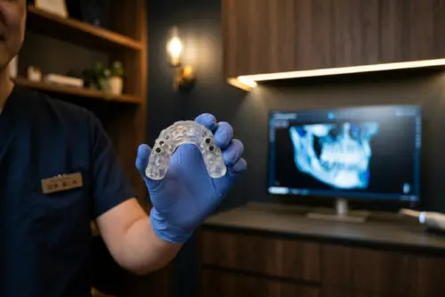
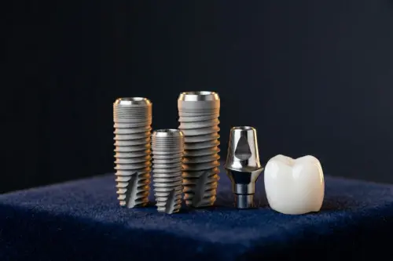

インプラント治療
IMPLANT
失った歯を、自分の歯のように取り戻す。
こんなお悩みありませんか？
- ✔ 歯を失ってしまい、入れ歯に抵抗がある
- ✔ ブリッジで健康な隣の歯を削りたくない
- ✔ 自分の歯のように、しっかり噛んで食事を楽しみたい
- ✔ 見た目も自然で美しい仕上がりにしたい
- ✔ 他院で骨が足りないとインプラントを断られた
インプラントとは？

インプラント治療とは、歯を失った部分のあごの骨にチタン製の人工歯根（インプラント）を埋め込み、その上に人工の歯を装着する治療法です。
入れ歯やブリッジとは異なり、独立して歯を支えるため、周囲の健康な歯に負担をかけません。天然の歯と同等の噛む力と、自然で美しい見た目を取り戻すことができる、画期的な治療法です。
当院のインプラント治療 5つの特徴
インプラント学会認定医が執刀
年間200本以上の埋入実績を持つ、日本口腔インプラント学会認定医である院長がすべての手術を担当します。豊富な経験と技術で、難症例にも確実に対応します。
歯科用CTによる精密な術前シミュレーション
あごの骨の厚みや神経・血管の位置をミリ単位で把握するため、最新の歯科用CTを完備。専用ソフトを用いて、安全な埋入位置を3Dでシミュレーションします。

ガイデッドサージェリーで安全・低侵襲な手術
シミュレーション通りに正確にインプラントを埋入するためのガイド（マウスピースのような器具）を使用。歯ぐきの切開を最小限に抑え、痛みや腫れを軽減します。

世界シェアトップクラスの信頼性の高いメーカー
当院では、長期的な安定性が科学的に証明されている「ストローマン」などの世界トップクラスのインプラント体のみを採用しています。

安心の10年保証制度
インプラント本体（フィクスチャー）には10年、上部構造（人工歯）には5年の長期保証を設けています。（※定期的なメンテナンスへの通院が条件となります）
治療の流れ
無料カウンセリング
約60分現在のお悩みやご希望をお伺いし、インプラント治療の概要やメリット・デメリット、おおよその費用について簡潔にご説明します。
精密検査
約30分歯科用CTによる撮影、口腔内スキャナーによる詳細なデータ取得、レントゲン・写真撮影などを行います。
治療計画のご提案・お見積り
約30分検査結果をもとに作成した3Dシミュレーションをご覧いただきながら、具体的な治療計画、期間、確定した総額費用をご提示します。
インプラント埋入手術
約1〜2時間完全に局所麻酔を効かせた上で、インプラント体をあごの骨に埋入します。手術自体は痛みを伴いません。
治癒期間
2〜6ヶ月インプラントとあごの骨がしっかりと結合するのを待つ期間です。日常生活に支障はありません。部位によって期間が異なります。
上部構造（人工歯）の装着・メンテナンス
定期検診型取りを行い精巧なセラミックの歯を装着して完了です。その後はインプラントを長持ちさせるため、定期的なメンテナンスに移行します。
他の治療法との比較
| インプラント 当院のおすすめ |
ブリッジ | 入れ歯 | |
|---|---|---|---|
| 審美性 | ◎ 天然歯と見分けがつかない | 〇 保険適用だと銀歯になる | △ 金具が見える場合がある |
| 噛む力 | ◎ 天然歯の約80〜90% | 〇 天然歯の約60% | △ 天然歯の約20〜30% |
| 周囲の歯への影響 | ◎ 負担をかけない | × 健康な隣の歯を削る必要がある | △ バネをかける歯に負担がかかる |
| 耐用年数 | ◎ 10年〜半永久的 | △ 平均7〜8年 | △ 平均4〜5年 |
| 費用 | △ 自費診療（初期費用がかかる） | 〇 保険・自費を選択可能 | 〇 保険・自費を選択可能 |
| 治療期間 | △ 3ヶ月〜半年程度 | 〇 約1ヶ月 | 〇 1ヶ月〜2ヶ月 |
料金表
| 相談・カウンセリング | 無料 |
|---|---|
| CT撮影・精密検査 | 11,000円 |
インプラント1本あたりの総額目安
| インプラント手術（ストローマン） | 220,000円 |
|---|---|
| ＋ アバットメント（土台） | 55,000円 |
| ＋ 上部構造（オールセラミッククラウン） | 110,000円 |
| 1本総額料金 | 385,000円（税込）〜 |
費用がネックで治療を諦めてほしくないため、最大84回の分割払いに対応しています。
1本385,000円の場合：月々
約5,000円〜（84回払いの場合）のシミュレーションも可能です。
インプラント治療は「医療費控除」の対象となります。1年間に支払った医療費の総額が10万円を超える場合、確定申告をすることで税金の一部が還付されます。
症例紹介
よくあるご質問
局所麻酔をしっかりと効かせてから行うため、手術中の痛みはほとんどありません。術後に麻酔が切れると多少の痛みや腫れが出ることがありますが、処方する鎮痛剤で抑えられる程度です。
インプラントがあごの骨に結合するまで待つ必要があるため、一般的には3ヶ月〜半年程度です。骨を造る手術を併用した場合は、もう少し期間がかかることがあります。
適切な定期メンテナンスと毎日の歯磨きを行っていれば、10年以上の残存率は95%以上といわれており、半永久的にお使いいただけることも多いです。当院では10年保証を設けております。
インプラント体には、生体親和性が高く金属アレルギーを起こしにくい「チタン」が使用されています。そのため、金属アレルギーの方でも問題なく治療を受けられるケースがほとんどです。
はい、ご相談可能です。「骨が足りない」と断られたケースでも、骨造成（GBR、サイナスリフト等）の技術によりインプラントが可能になる場合があります。セカンドオピニオンとしてもお気軽にご来院ください。